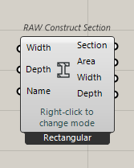
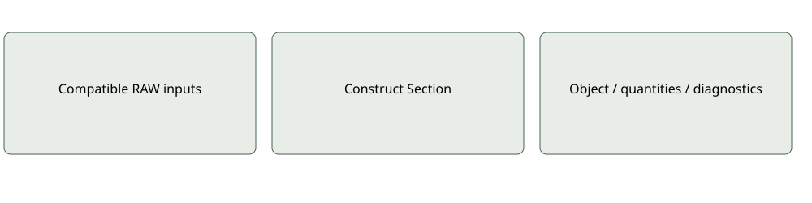
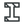

Elements

RAW Construct SectionConstructs geometric section data in SI from document-unit dimensions or a profile.
Inputs: Right-click shape: Rectangular, I-Section, Trapezoidal, Triangular, Polygonal, Circular; corresponding dimensions/profile and Section Name
Outputs: Section; Area; Width; Depth
No structural strength calculation; section is an input to Linear elements.Use and limitations
Optional and mode-specific ports may remain serialized when hidden. Inspect quantities, source provenance and coverage before interpreting results. A missing input is not an inferred zero.